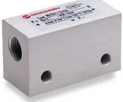

Datasheet (PDF)
en_3_4_005_M_58112.pdf
Tải tài liệuSingle stage vacuum pump, 28Nl/min

Mã M/58112/09 (Single stage vacuum pump, 28Nl/min) thuộc Vacuum Pumps dòng M/58112, có khoảng 10 phụ kiện liên quan như giác hút, công tắc chân không và bộ lọc. Một hệ gắp hoàn chỉnh cần chọn đồng bộ các phụ kiện này. Thông số: Medium: Compressed air | Port Size: G1/8 | Operating Temperature: -20 ... 150 °C, -4 ... 302 °F | Body: Anodised aluminium | Country of Origin: Germany. Gửi mô tả ứng dụng gắp để chúng tôi đề xuất phụ kiện và báo giá trọn cụm.
Các thông số phục vụ nhận diện ban đầu. Khi đặt hàng, vui lòng gửi yêu cầu để xác nhận lại cấu hình, chứng từ và điều kiện giao hàng.
Tài liệu hiển thị ở mức tham khảo để khách hàng kiểm tra nhanh. Với yêu cầu mua hàng, đội kỹ thuật sẽ xác nhận lại tài liệu phù hợp theo mã và cấu hình thực tế.
en_3_4_005_M_58112.pdf
Tải tài liệuDanh sách tham khảo giúp định hướng phụ kiện, cáp, fitting, coil, mountings hoặc mã tương tự. Khi báo giá, thông tin sẽ được kiểm tra lại theo cụm lắp thực tế.
Pneufit C flow regulator (out), banjo, elbow, G1/8, 6mm
Xem mã chínhPneufit C push-in fitting, adaptor, straight, G1/8, 6mm
Pneufit C push-in fitting, swivel adaptor, elbow, G1/8, 6mm
Vacuum gauge, G1/8
Silencer, G3/8
Tube cutter
Polyamide tube, natural, 25m, 6mm/4mm
Polyamide tube, natural, 100m, 6mm/4mm
Polyamide tube, black, 25m, 6mm/4mm
Polyamide tube, black, 100m, 6mm/4mm
M/58112/09 thuộc nhóm Vacuum Pumps. Trang này dùng để đối chiếu mô tả, thông số kỹ thuật, tài liệu và phụ kiện liên quan trước khi gửi yêu cầu báo giá.
Bạn gửi khối lượng vật, số lượng giác hút, độ kín bề mặt và áp suất khí cấp hiện có. Chúng tôi đối chiếu datasheet để chọn bơm/ejector có độ chân không và lưu lượng hút đủ lực. Bề mặt rỗ cần lưu lượng cao hơn bề mặt kín. Tính đúng cấu hình giúp đảm bảo lực và thời gian hút.
Bạn gửi part number cần tra; chúng tôi đối chiếu và cung cấp các thông số kỹ thuật chính cùng tài liệu liên quan đến mã đó. Nếu một mã có nhiều tài liệu (datasheet, hướng dẫn lắp, bản vẽ), chúng tôi nêu rõ từng loại. Việc này giúp bạn xác minh cấu hình trước khi đưa vào hồ sơ mua hoặc lắp đặt.
Bạn gửi part number thiết bị chính; chúng tôi đối chiếu thông tin phụ kiện và datasheet để liệt kê các mã liên quan như đế, đầu nối, cáp, coil hoặc bộ lọc. Danh sách này giúp bạn đặt đồng bộ, tránh thiếu khi lắp. Nếu cần, chúng tôi nhóm phụ kiện theo chức năng để bạn dễ chọn.
Được. Bạn gửi hai part number cần so sánh; chúng tôi đối chiếu các thông số chính từ datasheet như cổng, dải làm việc, điều khiển và phụ kiện liên quan, rồi nêu điểm khác biệt. Trên cơ sở so sánh đó, bạn chọn biến thể phù hợp ứng dụng trước khi yêu cầu báo giá.
Gửi thông số gắp & mã ejector để tính cấu hình chân không. Gửi part number, số lượng, ảnh tem hoặc vị trí lắp để đối chiếu cấu hình trước khi báo giá.